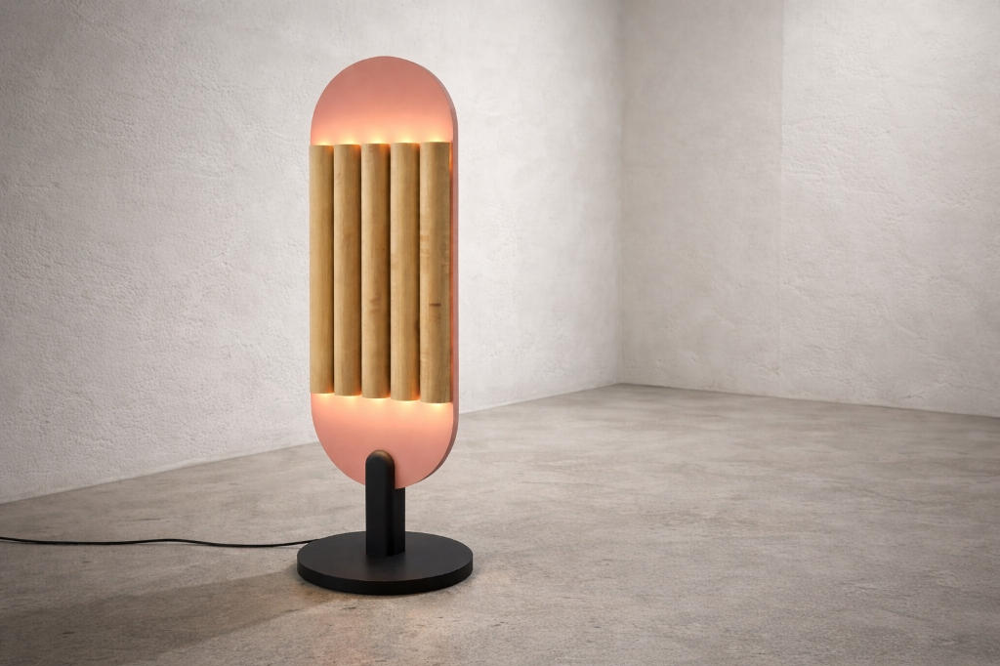

Lighting
Totem Lamp
A sculptural light fixture designed to diffuse warm, ambient illumination. The Totem Lamp features five hand-turned solid maple columns mounted on a powder-coated steel oval reflector in a muted terracotta-rose tone. The cylindrical columns hide warm LED sources, casting light back onto the curved steel plate and creating a glowing, totem-like silhouette. Grounded by a heavy cast iron circular base.
Materials
Hand-turned Maple, Powder-coated Steel, Aluminum
Dimensions
W 18" x D 12" x H 48"